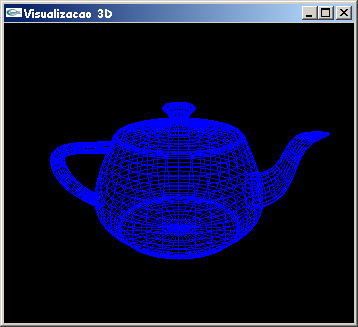
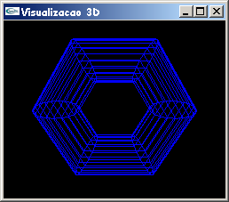
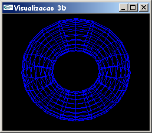
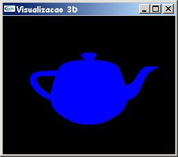

Os exemplos apresentados até aqui mostraram apenas desenhos 2D. Este capítulo descreve como trabalhar em 3D usando OpenGL. As bibliotecas GLU e GLUT possuem uma série de funções para desenhar primitivas 3D, tais como esferas, cones, cilindros e teapot. Em 3D se assume que o processo utilizado para visualizar uma determinada cena é análogo a tirar uma fotografia com uma máquina fotográfica, o que inclui, segundo [Woo 1999], os seguintes passos:
O exemplo abaixo exemplifica a utilização das funções OpenGL para visualização 3D.
// TeaPot3D.c - Isabel H. Manssour
// Um programa OpenGL que exemplifica a visualização
// de objetos 3D.
// Este código está baseado nos exemplos disponíveis no livro
// "OpenGL SuperBible", 2nd Edition, de Richard S. e Wright Jr.
#include <gl/glut.h>
GLfloat angle, fAspect;
// Função callback chamada para fazer o desenho
void Desenha(void)
{
glClear(GL_COLOR_BUFFER_BIT);
glColor3f(0.0f, 0.0f, 1.0f);
// Desenha o teapot com a cor corrente (wire-frame)
glutWireTeapot(50.0f);
// Executa os comandos OpenGL
glutSwapBuffers();
}
// Inicializa parâmetros de rendering
void Inicializa (void)
{
glClearColor(0.0f, 0.0f, 0.0f, 1.0f);
angle=45;
}
// Função usada para especificar o volume de visualização
void EspecificaParametrosVisualizacao(void)
{
// Especifica sistema de coordenadas de projeção
glMatrixMode(GL_PROJECTION);
// Inicializa sistema de coordenadas de projeção
glLoadIdentity();
// Especifica a projeção perspectiva
gluPerspective(angle,fAspect,0.1,500);
// Especifica sistema de coordenadas do modelo
glMatrixMode(GL_MODELVIEW);
// Inicializa sistema de coordenadas do modelo
glLoadIdentity();
// Especifica posição do observador e do alvo
gluLookAt(0,80,200, 0,0,0, 0,1,0);
}
// Função callback chamada quando o tamanho da janela é alterado
void AlteraTamanhoJanela(GLsizei w, GLsizei h)
{
// Para previnir uma divisão por zero
if ( h == 0 ) h = 1;
// Especifica o tamanho da viewport
glViewport(0, 0, w, h);
// Calcula a correção de aspecto
fAspect = (GLfloat)w/(GLfloat)h;
EspecificaParametrosVisualizacao();
}
// Função callback chamada para gerenciar eventos do mouse
void GerenciaMouse(int button, int state, int x, int y)
{
if (button == GLUT_LEFT_BUTTON)
if (state == GLUT_DOWN) { // Zoom-in
if (angle >= 10) angle -= 5;
}
if (button == GLUT_RIGHT_BUTTON)
if (state == GLUT_DOWN) { // Zoom-out
if (angle <= 130) angle += 5;
}
EspecificaParametrosVisualizacao();
glutPostRedisplay();
}
// Programa Principal
int main(void)
{
glutInitDisplayMode(GLUT_DOUBLE | GLUT_RGB);
glutInitWindowSize(350,300);
glutCreateWindow("Visualizacao 3D");
glutDisplayFunc(Desenha);
glutReshapeFunc(AlteraTamanhoJanela);
glutMouseFunc(GerenciaMouse);
Inicializa();
glutMainLoop();
}
O programa apresentado acima, como mostra a figura 14.1, apenas exibe um teapot (ou bule de chá) azul, no formato wire-frame, numa janela com fundo preto. Ao posicionar o mouse sobre a janela e clicar com o botão esquerdo e direito, é possível obter zoom-in e zoom-out, respectivamente. As novas funções utilizadas neste exemplo são descritas a seguir.

Figura 14.1 - Saída do programa TeaPot3D.c
gluPerspective(angle,fAspect,0.1,500); segundo [Wright 2000], esta função estabelece os parâmetros da Projeção Perspectiva, atualizando a matriz de projeção perspectiva. Seu protótipo é: void gluPerspective( GLdouble fovy, GLdouble aspect, GLdouble zNear, GLdouble zFar );. Descrição dos parâmetros: fovy é o ângulo, em graus, na direção y (usada para determinar a "altura" do volume de visualização); aspect é a razão de aspecto que determina a área de visualização na direção x, e seu valor é a razão em x (largura) e y (altura); zNear, que sempre deve ter um valor positivo maior do que zero, é a distância do observador até o plano de corte mais próximo (em z); zFar, que também sempre tem um valor positivo maior do que zero, é a distância do observador até o plano de corte mais afastado (em z). Esta função sempre deve ser definida ANTES da função gluLookAt, e no modo GL_PROJECTION.
gluLookAt(0,80,200, 0,0,0, 0,1,0); define a transformação de visualização. Através dos seus argumentos é possível indicar a posição da câmera e para onde ela está direcionada. Seu protótipo é: void gluLookAt( GLdouble eyex, GLdouble eyey, GLdouble eyez, GLdouble centerx, GLdouble centery, GLdouble centerz, GLdouble upx, GLdouble upy, GLdouble upz );. Descrição dos parâmetros: eyex, eyey e eyez são usados para definir as coordenadas x, y e z, respectivamente, da posição da câmera (ou observador); centerx, centery e centerz são usados para definir as coordenadas x, y e z, respectivamente, da posição do alvo, isto é, para onde o observador está olhando (normalmente, o centro da cena); upx, upy e upz são as coordenadas x, y e z, que estabelecem o vetor up (indica o "lado de cima" de uma cena 3D) [Wright 2000].
glutWireTeapot(50.0f); é usada para desenhar o wire-frame de um teapot (ou bule de chá). Seu protótipo é: glutWireTeapot(GLdoouble size);, onde o parâmetro size indica um raio aproximado do teapot. Uma esfera com este raio irá "envolver" totalmente o modelo [Wright 2000].
Assim como o teapot, a biblioteca GLUT também possui
funções para desenhar outros objetos 3D. Estas funções estão listadas abaixo [Woo 1999]:
- void glutWireCube(GLdouble size);
- void glutWireSphere(GLdouble radius, GLint slices, GLint stacks);
- void glutWireCone(GLdouble radius, GLdouble height, GLint slices, GLint
stacks);
- void glutWireTorus(GLdouble innerRadius, GLdouble outerRadius, GLint nsides, GLint
rings);
- void glutWireIcosahedron(void);
- void glutWireOctahedron(void);
- void glutWireTetrahedron(void);
- void glutWireDodecahedron(GLdouble radius);
Os parâmetros slices e stacks que aparecem no protótipo de algumas
funções,
significam, respectivamente, o número de subdivisões em torno do eixo z (como se
fossem linhas longitudinais) e o número de subdivisões ao longo do eixo z (como se
fossem linhas latitudinais). Já rings e nsides correspondem, respectivamente,
ao número de seções que serão usadas para formar o torus, e ao número de
subdivisões para cada seção. A figura 14.2 exibe um exemplo de um torus
com rings=6 e nsides=20, e a figura 14.3 exibe um exemplo com rings=20
e nsides=20.
|

|

|
Todas estas funções também podem ser usadas para desenhar objetos sólidos, ao invés de exibir apenas o seu wire-frame. Para isto, basta substituir a substring Wire do nome da função por Solid. Por exemplo, se substituirmos a chamada à função glutWireTeapot(50.0f) por glutSolidTeapot(50.0f) a imagem gerada é a apresentada na figura 14.4.

Figura 14.4 - Teapot gerado usando a função glutSolidTeapot